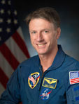

Lyndon B. Johnson Space Center
Houston, Texas 77058
|
National Aeronautics and Space Administration Lyndon B. Johnson Space Center Houston, Texas 77058 |
 |
Biographical Data |
||
C. MICHAEL FOALE (PH.D., CBE)
NASA ASTRONAUT (FORMER)
PERSONAL DATA: Born January 6, 1957, in Louth, England, but considers Cambridge, England, to be his hometown. Married to the former Rhonda R. Butler of Louisville, Kentucky. They have two children. He enjoys many outdoor activities, particularly cross country skiing, hiking, wind surfing, private flying, and soaring. He enjoys exploring physics, writing software, and working to implement Green Technologies, particularly in aerospace. He is passionate about promoting space travel and inspiring excitement for it, and is a keen consultant for endeavors that get humans off the planet.
EDUCATION: Graduated from Kings School, Canterbury, in 1975. He attended the University of Cambridge, Queens’ College, received a Bachelor of Arts in Physics, Natural Sciences Tripos, with 1st class honors, in 1978. While at the Cavendish Laboratories, he completed his Doctorate in Laboratory Astrophysics in 1982. He is a Fellow of the Royal Aeronautical Society (FRAeS) and Fellow of the Institute of Physics (FInstP). In 2005, Foale was awarded Commander of the Most Excellent Order of the British Empire (CBE).
EXPERIENCE: While a postgraduate at Cambridge University, Foale participated in the organization and execution of scientific scuba diving projects. Pursuing a career in the U.S. Space Program, Foale moved to Houston, Texas, to work on space shuttle navigation at McDonnell Douglas Aircraft Corporation. In June 1983, Foale joined the NASA Johnson Space Center. As a payload officer in the Mission Control Center, he was responsible for payload operations of commercial satellites deployed on space shuttle missions STS-51G, 51-I, 61-B and 61-C.
NASA EXPERIENCE: Selected as an astronaut candidate in June 1987. Before his first spaceflight he tested shuttle flight software in the Shuttle Avionics Integration Lab simulator. In preparation for a long-duration flight on the Russian Space Station Mir, Foale trained at the Cosmonaut Training Center in Star City, Russia. Foale also served as Chief of the Astronaut Office Expedition Corps, Assistant Director (Technical) of the Johnson Space Center, and Deputy Associate Administrator for Exploration Operations, NASA Headquarters. His most recent assignment at JSC was as Chief of the Soyuz Branch, Astronaut Office, supporting Soyuz and International Space Station operations, and space suit development. In 2013, Foale retired from NASA to develop an electric aircraft, with a goal to reduce the cost of flying by 90 percent, as part of his passion for Green Aviation. He is currently an advisor for the Inspiration Mars Foundation.
SPACE FLIGHT EXPERIENCE: Foale participated as a crew member on six space missions. STS-45 (March 24 to April 2, 1992) was the first of the ATLAS series of missions to study the atmosphere and solar interactions. STS-56 (April 9 to April 17, 1993) carried ATLAS-2 and the SPARTAN retrievable satellite that made observations of the solar corona. STS-63 (February 2 to February 11, 1995) was the first rendezvous with the Russian Space Station Mir. During STS-63, Dr. Foale made his first space walk (EVA) with Bernard Harris for 4 hours, 39 minutes, evaluating extremely cold spacesuit conditions, and exploring mass handling of the 2800-pound Spartan satellite. His next flight was aboard the Russian Space Station Mir, launched on STS-84 on May 15, 1997 to join the Mir 23 crew. Initially, Foale conducted science experiments, but then helped reestablish the Mir after it was degraded by a collision and depressurization. He conducted a 6-hour EVA in the Russian Orlan spacesuit with Anatoli Soloviev to inspect damage to the station's Spektr module caused by a collision of a Progress resupply ship. Foale returned to Earth on STS-86, October 6, 1997, having spent 145 days in space. From December 19 to December 27, 1999 he flew on STS-103, an 8-day mission, to repair and upgrade the Hubble Space Telescope. During an 8-hour and 10-minute EVA, Foale and Claude Nicollier replaced the telescope’s main computer and Fine Guidance Sensor. On October 18, 2003, Foale launched from Baikonur Cosmodrome, Kazakhstan on Soyuz TMA-3 and docked with the station on October 20, 2003, where he and Alexander Kalerie stayed until April 29, 2004, and conducted one 3 hour, 55 minute EVA in an Orlan space suit. Foale served as Expedition 8 Commander. The mission duration was 194 days, 18 hours and 35 minutes. Dr. Foale has logged more than 374 days in space including four space walks totaling 22 hours and 44 minutes.
AUGUST 2013